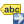

.
The Vector Properties Dialog¶
TODO: wurde leicht abgeändert
The Layer Properties dialog for a vector layer provides information about the layer, symbology settings and labeling options. If your vector layer has been loaded from a PostgreSQL/PostGIS datastore, you can also alter the underlying SQL for the layer by invoking the Query Builder dialog on the General tab. To access the Layer Properties dialog, double-click on a layer in the legend or right-click on the layer and select Properties from the pop-up menu.
Figure Vector Properties 1:
Vector Layer Properties Dialog 
Style Menu¶
The Style menu provides you with a comprehensive tool for rendering and symbolizing your vector data. You can use Layer rendering ‣ tools that are common to all vector data, as well as special symbolizing tools that were designed for the different kinds of vector data.
Renderers¶
The renderer is responsible for drawing a feature together with the correct symbol. There are four types of renderers: single symbol, categorized, graduated and rule-based. There is no continuous color renderer, because it is in fact only a special case of the graduated renderer. The categorized and graduated renderers can be created by specifying a symbol and a color ramp - they will set the colors for symbols appropriately. For point layers, there is a point displacement renderer available. For each data type (points, lines and polygons), vector symbol layer types are available. Depending on the chosen renderer, the Style menu provides different additional sections. On the bottom right of the symbology dialog, there is a [Symbol] button, which gives access to the Style Manager (see vector_style_manager). The Style Manager allows you to edit and remove existing symbols and add new ones.
After having made any needed changes, the symbol can be added to the list of
current style symbols (using [Symbol]  Save in symbol library),
and then it can easily be used in the future. Furthermore, you can use the [Save Style] button to
save the symbol as a KADAS layer style file (.qml) or SLD file (.sld). SLDs can be exported from any type of renderer – single symbol,
categorized, graduated or rule-based – but when importing an SLD, either a
single symbol or rule-based renderer is created.
That means that categorized or graduated styles are converted to rule-based.
If you want to preserve those renderers, you have to stick to the QML format.
On the other hand, it can be very handy sometimes to have this easy way of
converting styles to rule-based.
Save in symbol library),
and then it can easily be used in the future. Furthermore, you can use the [Save Style] button to
save the symbol as a KADAS layer style file (.qml) or SLD file (.sld). SLDs can be exported from any type of renderer – single symbol,
categorized, graduated or rule-based – but when importing an SLD, either a
single symbol or rule-based renderer is created.
That means that categorized or graduated styles are converted to rule-based.
If you want to preserve those renderers, you have to stick to the QML format.
On the other hand, it can be very handy sometimes to have this easy way of
converting styles to rule-based.
If you change the renderer type when setting the style of a vector layer the settings you made for the symbol will be maintained. Be aware that this procedure only works for one change. If you repeat changing the renderer type the settings for the symbol will get lost.
If the datasource of the layer is a database (PostGIS or Spatialite for example), you can save your layer style inside a table of the database. Just click on Save Style comboxbox and choose Save in database item then fill in the dialog to define a style name, add a description, an ui file and if the style is a default style. When loading a layer from the database, if a style already exists for this layer, KADAS will load the layer and its style. You can add several style in the database. Only one will be the default style anyway.
Figure Vector Properties 2:

Save Style in database Dialog
Tip
Select and change multiple symbols
The Symbology allows you to select multiple symbols and right click to change color, transparency, size, or width of selected entries.
Single Symbol Renderer
The Single Symbol Renderer is used to render all features of the layer using a single user-defined symbol. The properties, which can be adjusted in the Style menu, depend partially on the type of layer, but all types share the following dialog structure. In the top-left part of the menu, there is a preview of the current symbol to be rendered. On the right part of the menu, there is a list of symbols already defined for the current style, prepared to be used by selecting them from the list. The current symbol can be modified using the menu on the right side.
If you click on the first level in the Symbol layers dialog on the left side, it’s possible to define basic parameters like Size, Transparency, color and Rotation. Here, the layers are joined together.
Figure Symbology 3:

Single symbol line properties
In any spinbox in this dialog you can enter expressions. E.g. you can calculate simple math like multiplying the existing size of a point by 3 without resorting to a calculator.
Figure Symbology 4:

Expression in Size spinbox
If you click on the second level in the Symbol layers dialog a ‘Data-defined override’ for nearly all settings is possible. When using a data-defined color one may want to link the color to a field ‘budged’. Here a comment functionality is inserted.
/* This expression will return a color code depending on the field value.
* Negative value: red
* 0 value: yellow
* Positive value: green
*/
CASE
WHEN value < 0 THEN '#DC143C' -- Negative value: red
WHEN value = 0 THEN '#CCCC00' -- Value 0: yellow
ELSE '#228B22' -- Positive value: green
END
Figure Symbology 5:

Data-defined symbol with Edit... menu
Categorized Renderer
The Categorized Renderer is used to render all features from a layer, using a single user-defined symbol whose color reflects the value of a selected feature’s attribute. The Style menu allows you to select:
- The attribute (using the Column listbox or the
 Set column expression function, see Expressions)
Set column expression function, see Expressions) - The symbol (using the Symbol dialog)
- The colors (using the color Ramp listbox)
Then click on Classify button to create classes from the distinct value of the attribute column. Each classes can be disabled unchecking the checkbox at the left of the class name.
You can change symbol, value and/or label of the class, just double click on the item you want to change.
Right-click shows a contextual menu to Copy/Paste, Change color, Change transparency, Change output unit, Change symbol width.
The [Advanced] button in the lower-right corner of the dialog allows you to set the fields containing rotation and size scale information. For convenience, the center of the menu lists the values of all currently selected attributes together, including the symbols that will be rendered.
The example in figure_symbology_6 shows the category rendering dialog used for the rivers layer of the KADAS sample dataset.
Figure Symbology 6:

Categorized Symbolizing options
Graduated Renderer
The Graduated Renderer is used to render all the features from a layer, using a single user-defined symbol whose color reflects the assignment of a selected feature’s attribute to a class.
Figure Symbology 7:

Graduated Symbolizing options
Like the Categorized Renderer, the Graduated Renderer allows you to define rotation and size scale from specified columns.
Also, analogous to the Categorized Renderer, the Style tab allows you to select:
- The attribute (using the Column listbox or the
Set column expression function, see Expressions chapter)
- The symbol (using the Symbol Properties button)
- The colors (using the color Ramp list)
Additionally, you can specify the number of classes and also the mode for classifying features within the classes (using the Mode list). The available modes are:
- Equal Interval: each class has the same size (e.g. values from 0 to 16 and 4 classes, each class has a size of 4);
- Quantile: each class will have the same number of element inside (the idea of a boxplot);
- Natural Breaks (Jenks): the variance within each class is minimal while the variance between classes is maximal;
- Standard Deviation: classes are built depending on the standard deviation of the values;
- Pretty Breaks: the same of natural breaks but the extremes number of each class are integers.
The listbox in the center part of the Style menu lists the classes together with their ranges, labels and symbols that will be rendered.
Click on Classify button to create classes using the choosen mode. Each classes can be disabled unchecking the checkbox at the left of the class name.
You can change symbol, value and/or label of the clic, just double clicking on the item you want to change.
Right-click shows a contextual menu to Copy/Paste, Change color, Change transparency, Change output unit, Change symbol width.
The example in figure_symbology_7 shows the graduated rendering dialog for the rivers layer of the KADAS sample dataset.
Tip
Thematic maps using an expression
Categorized and graduated thematic maps can now be created using the result of an expression.
In the properties dialog for vector layers, the attribute chooser has been augmented with a
Set column expression function. So now you no longer
need to write the classification attribute to a new column in your attribute table if you want the
classification attribute to be a composite of multiple fields, or a formula of some sort.
Rule-based rendering
The Rule-based Renderer is used to render all the features from a layer, using rule based symbols whose color reflects the assignment of a selected feature’s attribute to a class. The rules are based on SQL statements. The dialog allows rule grouping by filter or scale, and you can decide if you want to enable symbol levels or use only the first-matched rule.
The example in figure_symbology_8 shows the rule-based rendering dialog for the rivers layer of the KADAS sample dataset.
To create a rule, activate an existing row by double-clicking on it, or click on ‘+’ and
click on the new rule. In the Rule properties dialog, you can define a label
for the rule. Press the  button to open the expression string builder. In
the Function List, click on Fields and Values to view all attributes of
the attribute table to be searched. To add an attribute to the field calculator Expression field,
double click its name in the Fields and Values list. Generally, you
can use the various fields, values and functions to construct the calculation
expression, or you can just type it into the box (see Expressions).
You can create a new rule by copying and pasting an existing rule with the right mouse button.
You can also use the ‘ELSE’ rule that will be run if none of the other
rules on that level match.
The rules appear in a tree hierarchy in the map legend. Just double-klick
the rules in the map legend and the Style menu of the layer properties appears showing the rule that
is the background for the symbol in the tree.
button to open the expression string builder. In
the Function List, click on Fields and Values to view all attributes of
the attribute table to be searched. To add an attribute to the field calculator Expression field,
double click its name in the Fields and Values list. Generally, you
can use the various fields, values and functions to construct the calculation
expression, or you can just type it into the box (see Expressions).
You can create a new rule by copying and pasting an existing rule with the right mouse button.
You can also use the ‘ELSE’ rule that will be run if none of the other
rules on that level match.
The rules appear in a tree hierarchy in the map legend. Just double-klick
the rules in the map legend and the Style menu of the layer properties appears showing the rule that
is the background for the symbol in the tree.
Figure Symbology 8:

Rule-based Symbolizing options
Point displacement
The Point Displacement Renderer works to visualize all features of a point layer, even if they have the same location. To do this, the symbols of the points are placed on a displacement circle around a center symbol.
Figure Symbology 9:

Point displacement dialog
Tip
Export vector symbology
You have the option to export vector symbology from KADAS into Google *.kml, *.dxf and MapInfo *.tab files. Just open the right mouse menu of the layer and click on Save selection as ‣ to specify the name of the output file and its format. In the dialog, use the Symbology export menu to save the symbology either as Feature symbology ‣ or as Symbol layer symbology ‣. If you have used symbol layers, it is recommended to use the second setting.
Inverted Polygon
Inverted polygon renderer allows user to define a symbol to fill in outside of the layer’s polygons. As before you can select subrenderers. These subrenderers are the same as for the main renderers.
Figure Symbology 10:
Inverted Polygon dialog
Tip
Switch quickly between styles
Once you created one of the above mentioned styles you can right-klick on the layer and choose Styles ‣ Add to save your style. Now you can easily switch between styles you created using the Styles ‣ menu again.
Heatmap
With the Heatmap renderer you can create live dynamic heatmaps for (multi)point layers. You can specify the heatmap radius in pixels, mm or map units, choose a color ramp for the heatmap style and use a slider for selecting a tradeoff between render speed and quality. When adding or removing a feature the heatmap renderer updates the heatmap style automatically.
Color Picker¶
Regardless the type of style to be used, the select color dialog will show when you click to choose a
color - either border or fill color. This dialog has four different tabs which allow you to select colors by  color ramp,
color ramp,
 color wheel,
color wheel,  color swatches or
color swatches or  color picker.
color picker.
Whatever method you use, the selected color is always described through color sliders for HSV (Hue, Saturation, Value) and RGB (Red, Green, Blue) values. There is also an opacity slider to set transparency level. On the lower left part of the dialog you can see a comparison between the current and the new color you are presently selecting and on the lower right part you have the option to add the color you just tweaked into a color slot button.
Figure color picker 1:

Color picker ramp tab
With color ramp or with color wheel, you can browse to all possible color combinations.
There are other possibilities though. By using color swatches you can choose from a preselected list. This selected list is
populated with one of three methods: Recent colors, Standard colors or Project colors
Figure color picker 2:

Color picker swatcher tab
Another option is to use the color picker which allows you to sample a color from under your mouse pointer at any part of
QGIS or even from another application by pressing the space bar. Please note that the color picker is OS dependent and is currently not supported by OSX.
Tip
quick color picker + copy/paste colors
You can quickly choose from Recent colors, from Standard colors or simply copy or paste a color by clicking the drop-down arrow that follows a current color box.
Figure color picker 3:

Quick color picker menu
Layer rendering¶
- Layer transparency
 : You can make the underlying layer in the map canvas
visible with this tool. Use the slider to adapt the visibility of your vector layer to your needs.
You can also make a precise definition of the percentage of visibility in the the menu beside the slider.
: You can make the underlying layer in the map canvas
visible with this tool. Use the slider to adapt the visibility of your vector layer to your needs.
You can also make a precise definition of the percentage of visibility in the the menu beside the slider.
- Layer blending mode and Feature blending mode: You can achieve special rendering effects with these tools that you may
previously only know from graphics programs. The pixels of your overlaying and underlaying layers are mixed
through the settings described below.
- Normal: This is the standard blend mode, which uses the alpha channel of the top pixel to blend with the pixel beneath it. The colors aren’t mixed.
- Lighten: This selects the maximum of each component from the foreground and background pixels. Be aware that the results tend to be jagged and harsh.
- Screen: Light pixels from the source are painted over the destination, while dark pixels are not. This mode is most useful for mixing the texture of one layer with another layer (e.g., you can use a hillshade to texture another layer).
- Dodge: Dodge will brighten and saturate underlying pixels based on the lightness of the top pixel. So, brighter top pixels cause the saturation and brightness of the underlying pixels to increase. This works best if the top pixels aren’t too bright; otherwise the effect is too extreme.
- Addition: This blend mode simply adds pixel values of one layer with the other. In case of values above one (in the case of RGB), white is displayed. This mode is suitable for highlighting features.
- Darken: This creates a resultant pixel that retains the smallest components of the foreground and background pixels. Like lighten, the results tend to be jagged and harsh.
- Multiply: Here, the numbers for each pixel of the top layer are multiplied with the corresponding pixels for the bottom layer. The results are darker pictures.
- Burn: Darker colors in the top layer cause the underlying layers to darken. Burn can be used to tweak and colorise underlying layers.
- Overlay: This mode combines the multiply and screen blending modes. In the resulting picture, light parts become lighter and dark parts become darker.
- Soft light: This is very similar to overlay, but instead of using multiply/screen it uses color burn/dodge. This is supposed to emulate shining a soft light onto an image.
- Hard light: Hard light is also very similar to the overlay mode. It’s supposed to emulate projecting a very intense light onto an image.
- Difference: Difference subtracts the top pixel from the bottom pixel, or the other way around, to always get a positive value. Blending with black produces no change, as the difference with all colors is zero.
- Subtract: This blend mode simply subtracts pixel values of one layer from the other. In case of negative values, black is displayed.
Labels Menu¶
The  Labels core application provides smart
labeling for vector point, line and polygon layers, and it only requires a
few parameters. This new application also supports on-the-fly transformed layers.
The core functions of the application have been redesigned. In KADAS, there are a
number of other features that improve the labeling. The following menus
have been created for labeling the vector layers:
Labels core application provides smart
labeling for vector point, line and polygon layers, and it only requires a
few parameters. This new application also supports on-the-fly transformed layers.
The core functions of the application have been redesigned. In KADAS, there are a
number of other features that improve the labeling. The following menus
have been created for labeling the vector layers:
- Text
- Formatting
- Buffer
- Background
- Shadow
- Placement
- Rendering
Let us see how the new menus can be used for various vector layers.
Labeling point layers
Start KADAS and load a vector point layer. Activate the layer in the legend and click on the
Layer Labeling Options icon in the KADAS toolbar menu.
The first step is to activate the  Label this layer with checkbox
and select an attribute column to use for labeling. Click if you
want to define labels based on expressions - See labeling_with_expressions.
Label this layer with checkbox
and select an attribute column to use for labeling. Click if you
want to define labels based on expressions - See labeling_with_expressions.
The following steps describe a simple labeling without using the Data defined override functions, which are situated next to the drop-down menus.
You can define the text style in the Text menu (see Figure_labels_1 ). Use the Type case option to influence the text rendering. You have the possibility to render the text ‘All uppercase’, ‘All lowercase’ or ‘Capitalize first letter’. Use the blend modes to create effects known from graphics programs (see blend_modes).
In the Formatting menu, you can define a character for a line break in the labels with the ‘Wrap on character’ function.
Use the Formatted numbers option to format the numbers in an attribute table. Here,
decimal places may be inserted. If you enable this option, three decimal places are initially set by default.
To create a buffer, just activate the Draw text buffer checkbox in the Buffer menu.
The buffer color is variable. Here, you can also use blend modes (see blend_modes).
If the color buffer’s fill checkbox is activated, it will interact with partially transparent
text and give mixed color transparency results. Turning off the buffer fill fixes that issue (except where the interior
aspect of the buffer’s stroke intersects with the text’s fill) and also allows you to make outlined text.
In the Background menu, you can define with Size X and Size Y the shape of your background. Use Size type to insert an additional ‘Buffer’ into your background. The buffer size is set by default here. The background then consists of the buffer plus the background in Size X and Size Y. You can set a Rotation where you can choose between ‘Sync with label’, ‘Offset of label’ and ‘Fixed’. Using ‘Offset of label’ and ‘Fixed’, you can rotate the background. Define an Offset X,Y with X and Y values, and the background will be shifted. When applying Radius X,Y, the background gets rounded corners. Again, it is possible to mix the background with the underlying layers in the map canvas using the Blend mode (see blend_modes).
Use the Shadow menu for a user-defined Drop shadow. The drawing of the background is very variable.
Choose between ‘Lowest label component’, ‘Text’, ‘Buffer’ and ‘Background’. The Offset angle depends on the orientation
of the label. If you choose the Use global shadow checkbox, then the zero point of the angle is
always oriented to the north and doesn’t depend on the orientation of the label. You can influence the appearance of the shadow
with the Blur radius. The higher the number, the softer the shadows. The appearance of the drop shadow can also be altered by choosing a blend mode (see blend_modes).
Choose the Placement menu for the label placement and the labeling priority. Using the
 Offset from point setting, you now have the option to use Quadrants
to place your label. Additionally, you can alter the angle of the label placement with the Rotation setting.
Thus, a placement in a certain quadrant with a certain rotation is possible.
In the priority section you can define with which priority the labels are rendered.
It interacts with labels of the other vector layers in the map canvas. If there are labels from different layers
in the same location then the label with the higher priority will be displayed and the other will be
left out.
Offset from point setting, you now have the option to use Quadrants
to place your label. Additionally, you can alter the angle of the label placement with the Rotation setting.
Thus, a placement in a certain quadrant with a certain rotation is possible.
In the priority section you can define with which priority the labels are rendered.
It interacts with labels of the other vector layers in the map canvas. If there are labels from different layers
in the same location then the label with the higher priority will be displayed and the other will be
left out.
In the Rendering menu, you can define label and feature options. Under Label options,
you find the scale-based visibility setting now. You can prevent KADAS from rendering only selected labels with
the Show all labels for this layer (including colliding labels) checkbox.
Under Feature options, you can define whether every part of a multipart feature is to be labeled. It’s possible to define
whether the number of features to be labeled is limited and to Discourage labels from covering features.
Figure Labels 1:

Smart labeling of vector point layers
Labeling line layers
The first step is to activate the Label this layer checkbox
in the Label settings tab and select an attribute column to use for
labeling. Click if you
want to define labels based on expressions - See labeling_with_expressions.
After that, you can define the text style in the Text menu. Here, you can use the same settings as for point layers.
Also, in the Formatting menu, the same settings as for point layers are possible.
The Buffer menu has the same functions as described in section labeling_point_layers.
The Background menu has the same entries as described in section labeling_point_layers.
Also, the Shadow menu has the same entries as described in section labeling_point_layers.
In the Placement menu, you find special settings for line layers. The label can be placed
Parallel,  Curved or Horizontal.
With the Parallel and Curved option, you can define the position Above line, On line
and Below line. It’s possible to select several options at once.
In that case, KADAS will look for the optimal position of the label. Remember that here you can
also use the line orientation for the position of the label.
Additionally, you can define a Maximum angle between curved characters when
selecting the Curved option (see Figure_labels_2 ).
Curved or Horizontal.
With the Parallel and Curved option, you can define the position Above line, On line
and Below line. It’s possible to select several options at once.
In that case, KADAS will look for the optimal position of the label. Remember that here you can
also use the line orientation for the position of the label.
Additionally, you can define a Maximum angle between curved characters when
selecting the Curved option (see Figure_labels_2 ).
You can set up a minimum distance for repeating labels. Distance can be in mm or in map units.
Some Placement setup will display more options, for example, Curved and Parallel Placements will allow the user to set up the position of the label (above, below or on the line), distance from the line and for Curved, the user can also setup inside/outside max angle between curved label. As for point vector layers you have the possibility to define a Priority for the labels.
The Rendering menu has nearly the same entries as for point layers. In the Feature options, you can now Suppress labeling of features smaller than.
Figure Labels 2:

Smart labeling of vector line layers
Labeling polygon layers
The first step is to activate the Label this layer checkbox
and select an attribute column to use for labeling. Click if you
want to define labels based on expressions - See labeling_with_expressions.
In the Text menu, define the text style. The entries are the same as for point and line layers.
The Formatting menu allows you to format multiple lines, also similar to the cases of point and line layers.
As with point and line layers, you can create a text buffer in the Buffer menu.
Use the Background menu to create a complex user-defined background for the polygon layer. You can use the menu also as with the point and line layers.
The entries in the Shadow menu are the same as for point and line layers.
In the Placement menu, you find special settings for polygon layers (see Figure_labels_3).
Offset from centroid, Horizontal (slow),
Around centroid, Free and
Using perimeter are possible.
In the Offset from centroid settings, you can specify if the centroid
is of the visible polygon or whole polygon.
That means that either the centroid is used for the polygon you can see on the map or the centroid is
determined for the whole polygon, no matter if you can see the whole feature on the map.
You can place your label with the quadrants here, and define offset and rotation.
The Around centroid setting makes it possible to place the label
around the centroid with a certain distance. Again, you can define visible polygon
or whole polygon for the centroid.
With the Using perimeter settings, you can define a position and
a distance for the label. For the position, Above line, On line,
Below line and Line orientation dependent position are possible.
Related to the choice of Label Placement, several options will appear. As for Point Placement you can choose the distance for the polygon outline, repeat the label around the polygon perimeter.
As for point and line vector layers you have the possibility to define a Priority for the polygon vector layer.
The entries in the Rendering menu are the same as for line layers. You can also use Suppress labeling of features smaller than in the Feature options.
Figure Labels 3:

Smart labeling of vector polygon layers
Define labels based on expressions
QGIS allows to use expressions to label features. Just click the
icon in the Labels
menu of the properties dialog. In figure_labels_4 you see a sample expression
to label the alaska regions with name and area size, based on the field ‘NAME_2’,
some descriptive text and the function ‘$area()’ in combination with
‘format_number()’ to make it look nicer.
Figure Labels 4:

Using expressions for labeling
Expression based labeling is easy to work with. All you have to take care of is, that you need to combine all elements (strings, fields and functions) with a string concatenation sign ‘||’ and that fields a written in “double quotes” and strings in ‘single quotes’. Let’s have a look at some examples:
# label based on two fields 'name' and 'place' with a comma as separater
"name" || ', ' || "place"
-> John Smith, Paris
# label based on two fields 'name' and 'place' separated by comma
'My name is ' || "name" || 'and I live in ' || "place"
-> My name is John Smith and I live in Paris
# label based on two fields 'name' and 'place' with a descriptive text
# and a line break (\n)
'My name is ' || "name" || '\nI live in ' || "place"
-> My name is John Smith
I live in Paris
# create a multi-line label based on a field and the $area function
# to show the place name and its area size based on unit meter.
'The area of ' || "place" || 'has a size of ' || $area || 'm²'
-> The area of Paris has a size of 105000000 m²
# create a CASE ELSE condition. If the population value in field
# population is <= 50000 it is a town, otherwise a city.
'This place is a ' || CASE WHEN "population <= 50000" THEN 'town' ELSE 'city' END
-> This place is a town
As you can see in the expression builder, you have hundreds of functions available to create simple and very complex expressions to label your data in QGIS. See Expressions chapter for more information and examples on expressions.
Using data-defined override for labeling
With the data-defined override functions, the settings for the labeling are overridden by entries in the attribute table. You can activate and deactivate the function with the right-mouse button. Hover over the symbol and you see the information about the data-defined override, including the current definition field. We now describe an example using the data-defined override function for the Move label function (see figure_labels_5 ).
{kind=link}
- Import lakes.shp from the KADAS sample dataset.
- Double-click the layer to open the Layer Properties. Click on Labels
and Placement. Select Offset from centroid.
- Look for the Data defined entries. Click the icon to define the field type for the Coordinate. Choose ‘xlabel’ for X and ‘ylabel’ for Y. The icons are now highlighted in yellow.
- Zoom into a lake.
- Go to the Label toolbar and click the icon. Now you can shift the label manually to another position (see figure_labels_6 ). The new position of the label is saved in the ‘xlabel’ and ‘ylabel’ columns of the attribute table.
{kind=link}
Figure Labels 5:

Labeling of vector polygon layers with data-defined override
Figure Labels 6:

Move labels
Fields Menu¶
 Within the Fields menu, the field attributes of the
selected dataset can be manipulated. The buttons
Within the Fields menu, the field attributes of the
selected dataset can be manipulated. The buttons  New Column and
New Column and  Delete Column
can be used when the dataset is in
Delete Column
can be used when the dataset is in  Editing mode.
Editing mode.
Edit Widget
Figure Fields 1:

Dialog to select an edit widget for an attribute column
Within the Fields menu, you also find an edit widget column. This column can be used to define values or a range of values that are allowed to be added to the specific attribute table column. If you click on the [edit widget] button, a dialog opens, where you can define different widgets. These widgets are:
- Checkbox: Displays a checkbox, and you can define what attribute is added to the column when the checkbox is activated or not.
- Classification: Displays a combo box with the values used for classification, if you have chosen ‘unique value’ as legend type in the Style menu of the properties dialog.
- Color: Displays a color button allowing user to choose a color from the color dialog window.
- Date/Time: Displays a line field which can open a calendar widget to enter a date, a time or both. Column type must be text. You can select a custom format, pop-up a calendar, etc.
- Enumeration: Opens a combo box with values that can be used within the columns type. This is currently only supported by the PostgreSQL provider.
- File name: Simplifies the selection by adding a file chooser dialog.
- Hidden: A hidden attribute column is invisible. The user is not able to see its contents.
- Photo: Field contains a filename for a picture. The width and height of the field can be defined.
- Range: Allows you to set numeric values from a specific range. The edit widget can be either a slider or a spin box.
- Relation Reference: This widged lets you embed the feature form of the referenced layer on the feature form of the actual layer. See vector_relations.
- Text edit (default): This opens a text edit field that allows simple text or multiple lines to be used. If you choose multiple lines you can also choose html content.
- Unique values: You can select one of the values already used in the attribute table. If ‘Editable’ is activated, a line edit is shown with autocompletion support, otherwise a combo box is used.
- UUID Generator: Generates a read-only UUID (Universally Unique Identifiers) field, if empty.
- Value map: A combo box with predefined items. The value is stored in the attribute, the description is shown in the combo box. You can define values manually or load them from a layer or a CSV file.
- Value Relation: Offers values from a related table in a combobox. You can select layer, key column and value column.
- Webview: Field contains a URL. The width and height of the field is variable.
Note
KADAS has an advanced ‘hidden’ option to define your own field widget using python and add it to this impressive list of widgets. It is tricky but it is very well explained in following excellent blog that explains how to create a real time validation widget that can be used like described widgets. See http://blog.vitu.ch/10142013-1847/write-your-own-qgis-form-elements
With the Attribute editor layout, you can now define built-in forms (see figure_fields_2). This is usefull for data entry jobs or to identify objects using the option auto open form when you have objects with many attributes. You can create an editor with several tabs and named groups to present the attribute fields.
Choose ‘Drag and drop designer’ and an attribute column. Use the  icon to create
a category to insert a tab or a named group (see figure_fields_3).
When creating a new category, KADAS will insert a new tab or named group for the category in the built-in form.
The next step will be to assign the relevant fields to a selected category
with the
icon to create
a category to insert a tab or a named group (see figure_fields_3).
When creating a new category, KADAS will insert a new tab or named group for the category in the built-in form.
The next step will be to assign the relevant fields to a selected category
with the  icon. You can create more categories and use the
same fields again.
icon. You can create more categories and use the
same fields again.
Other options in the dialog are ‘Autogenerate’ and ‘Provide ui-file’.
- ‘Autogenerate’ just creates editors for all fields and tabulates them.
- The ‘Provide ui-file’ option allows you to use complex dialogs made with the Qt-Designer. Using a UI-file allows a great deal of freedom in creating a dialog. For detailed information, see http://nathanw.net/2011/09/05/qgis-tips-custom-feature-forms-with-python-logic/.
KADAS dialogs can have a Python function that is called when the dialog is opened. Use this function to add extra logic to your dialogs. An example is (in module MyForms.py):
def open(dialog,layer,feature):
geom = feature.geometry()
control = dialog.findChild(QWidged,"My line edit")
Reference in Python Init Function like so: MyForms.open
MyForms.py must live on PYTHONPATH, in .qgis2/python, or inside the project folder.
Figure Fields 2:

Dialog to create categories with the Attribute editor layout
Figure Fields 3:

Resulting built-in form with tabs and named groups
General Menu¶
 Use this menu to make general settings for the vector layer.
There are several options available:
Use this menu to make general settings for the vector layer.
There are several options available:
Layer Info
- Change the display name of the layer in displayed as
- Define the Layer source of the vector layer
- Define the Data source encoding to define provider-specific options and to be able to read the file
Coordinate Reference System
- Specify the coordinate reference system. Here, you can view or change the projection of the specific vector layer.
- Create a Spatial Index (only for OGR-supported formats)
- Update Extents information for a layer
- View or change the projection of the specific vector layer, clicking on Specify ...
Scale dependent visibility
- You can set the Maximum (inclusive) and Minimum (exclusive) scale. The scale can also be set by the [Current] buttons.
Feature subset
- With the [Query Builder] button, you can create a subset of the features in the layer that will be visualized (also refer to section vector_query_builder).
Figure General 1:
General menu in vector layers properties dialog
Rendering Menu¶
KADAS supports for on-the-fly feature generalisation. This can improve rendering times
when drawing many complex features at small scales. This feature can be enabled or disabled in the
layer settings using the Simplify geometry option. There is also a new global
setting that enables generalisation by default for newly added layers (see section Options).
Note: Feature generalisation may introduce artefacts into your rendered output in some cases.
These may include slivers between polygons and inaccurate rendering when using offset-based symbol layers.
Display Menu¶
 This menu is specifically created for Map Tips. It includes a new feature:
Map Tip display text in HTML. While you can still choose a Field
to be displayed when hovering over a feature on the map, it is now possible to insert HTML code that creates a complex
display when hovering over a feature. To activate Map Tips, select the menu option View ‣ MapTips. Figure Display 1 shows an example of HTML code.
This menu is specifically created for Map Tips. It includes a new feature:
Map Tip display text in HTML. While you can still choose a Field
to be displayed when hovering over a feature on the map, it is now possible to insert HTML code that creates a complex
display when hovering over a feature. To activate Map Tips, select the menu option View ‣ MapTips. Figure Display 1 shows an example of HTML code.
Figure Display 1:

HTML code for map tip
Figure Display 2:

Map tip made with HTML code
Actions Menu¶
 KADAS provides the ability to perform an action based on the attributes
of a feature. This can be used to perform any number of actions, for example,
running a program with arguments built from the attributes of a feature or
passing parameters to a web reporting tool.
KADAS provides the ability to perform an action based on the attributes
of a feature. This can be used to perform any number of actions, for example,
running a program with arguments built from the attributes of a feature or
passing parameters to a web reporting tool.
Figure Actions 1:

Overview action dialog with some sample actions
Actions are useful when you frequently want to run an external application or view a web page based on one or more values in your vector layer. They are divided into six types and can be used like this:
- Generic, Mac, Windows and Unix actions start an external process.
- Python actions execute a Python expression.
- Generic and Python actions are visible everywhere.
- Mac, Windows and Unix actions are visible only on the respective platform (i.e., you can define three ‘Edit’ actions to open an editor and the users can only see and execute the one ‘Edit’ action for their platform to run the editor).
There are several examples included in the dialog. You can load them by clicking on [Add default actions]. One example is performing a search based on an attribute value. This concept is used in the following discussion.
Defining Actions
Attribute actions are defined from the vector Layer Properties dialog. To define an action, open the vector Layer Properties dialog and click on the Actions menu. Go to the Action properties. Select ‘Generic’ as type and provide a descriptive name for the action. The action itself must contain the name of the application that will be executed when the action is invoked. You can add one or more attribute field values as arguments to the application. When the action is invoked, any set of characters that start with a % followed by the name of a field will be replaced by the value of that field. The special characters %% will be replaced by the value of the field that was selected from the identify results or attribute table (see using_actions below). Double quote marks can be used to group text into a single argument to the program, script or command. Double quotes will be ignored if preceded by a backslash.
If you have field names that are substrings of other field names (e.g., col1 and col10), you should indicate that by surrounding the field name (and the % character) with square brackets (e.g., [%col10]). This will prevent the %col10 field name from being mistaken for the %col1 field name with a 0 on the end. The brackets will be removed by KADAS when it substitutes in the value of the field. If you want the substituted field to be surrounded by square brackets, use a second set like this: [[%col10]].
Using the Identify Features tool, you can open the Identify Results dialog. It includes a (Derived) item that contains information relevant to the layer type. The values in this item can be accessed in a similar way to the other fields by preceeding the derived field name with (Derived).. For example, a point layer has an X and Y field, and the values of these fields can be used in the action with %(Derived).X and %(Derived).Y. The derived attributes are only available from the Identify Results dialog box, not the Attribute Table dialog box.
Two example actions are shown below:
- konqueror http://www.google.com/search?q=%nam
- konqueror http://www.google.com/search?q=%%
In the first example, the web browser konqueror is invoked and passed a URL to open. The URL performs a Google search on the value of the nam field from our vector layer. Note that the application or script called by the action must be in the path, or you must provide the full path. To be certain, we could rewrite the first example as: /opt/kde3/bin/konqueror http://www.google.com/search?q=%nam. This will ensure that the konqueror application will be executed when the action is invoked.
The second example uses the %% notation, which does not rely on a particular field for its value. When the action is invoked, the %% will be replaced by the value of the selected field in the identify results or attribute table.
Using Actions
Actions can be invoked from either the Identify Results dialog,
an Attribute Table dialog or from Run Feature Action
(recall that these dialogs can be opened by clicking  Identify Features or
Identify Features or  Open Attribute Table or
Run Feature Action). To invoke an action, right
click on the record and choose the action from the pop-up menu. Actions are
listed in the popup menu by the name you assigned when defining the action.
Click on the action you wish to invoke.
Open Attribute Table or
Run Feature Action). To invoke an action, right
click on the record and choose the action from the pop-up menu. Actions are
listed in the popup menu by the name you assigned when defining the action.
Click on the action you wish to invoke.
{kind=link}
If you are invoking an action that uses the %% notation, right-click on the field value in the Identify Results dialog or the Attribute Table dialog that you wish to pass to the application or script.
Here is another example that pulls data out of a vector layer and inserts
it into a file using bash and the echo command (so it will only work on
or perhaps  ). The layer in question has fields for a species name
taxon_name, latitude lat and longitude long. We would like to be
able to make a spatial selection of localities and export these field values
to a text file for the selected record (shown in yellow in the KADAS map area).
Here is the action to achieve this:
). The layer in question has fields for a species name
taxon_name, latitude lat and longitude long. We would like to be
able to make a spatial selection of localities and export these field values
to a text file for the selected record (shown in yellow in the KADAS map area).
Here is the action to achieve this:
bash -c "echo \"%taxon_name %lat %long\" >> /tmp/species_localities.txt"
After selecting a few localities and running the action on each one, opening the output file will show something like this:
Acacia mearnsii -34.0800000000 150.0800000000
Acacia mearnsii -34.9000000000 150.1200000000
Acacia mearnsii -35.2200000000 149.9300000000
Acacia mearnsii -32.2700000000 150.4100000000
As an exercise, we can create an action that does a Google search on the lakes layer. First, we need to determine the URL required to perform a search on a keyword. This is easily done by just going to Google and doing a simple search, then grabbing the URL from the address bar in your browser. From this little effort, we see that the format is http://google.com/search?q=qgis, where QGIS is the search term. Armed with this information, we can proceed:
Make sure the lakes layer is loaded.
Open the Layer Properties dialog by double-clicking on the layer in the legend, or right-click and choose Properties from the pop-up menu.
Click on the Actions menu.
Enter a name for the action, for example Google Search.
For the action, we need to provide the name of the external program to run. In this case, we can use Firefox. If the program is not in your path, you need to provide the full path.
Following the name of the external application, add the URL used for doing a Google search, up to but not including the search term: http://google.com/search?q=
The text in the Action field should now look like this: firefox http://google.com/search?q=
Click on the drop-down box containing the field names for the lakes layer. It’s located just to the left of the [Insert Field] button.
From the drop-down box, select ‘NAMES’ and click [Insert Field].
Your action text now looks like this:
firefox http://google.com/search?q=%NAMES
To finalize the action, click the [Add to action list] button.
This completes the action, and it is ready to use. The final text of the action should look like this:
firefox http://google.com/search?q=%NAMES
We can now use the action. Close the Layer Properties dialog and zoom in to an area of interest. Make sure the lakes layer is active and identify a lake. In the result box you’ll now see that our action is visible:
Figure Actions 2:

Select feature and choose action
When we click on the action, it brings up Firefox and navigates to the URL http://www.google.com/search?q=Tustumena. It is also possible to add further attribute fields to the action. Therefore, you can add a + to the end of the action text, select another field and click on [Insert Field]. In this example, there is just no other field available that would make sense to search for.
You can define multiple actions for a layer, and each will show up in the Identify Results dialog.
There are all kinds of uses for actions. For example, if you have a point layer containing locations of images or photos along with a file name, you could create an action to launch a viewer to display the image. You could also use actions to launch web-based reports for an attribute field or combination of fields, specifying them in the same way we did in our Google search example.
We can also make more complex examples, for instance, using Python actions.
Usually, when we create an action to open a file with an external application, we can use absolute paths, or eventually relative paths. In the second case, the path is relative to the location of the external program executable file. But what about if we need to use relative paths, relative to the selected layer (a file-based one, like a shapefile or SpatiaLite)? The following code will do the trick:
command = "firefox";
imagerelpath = "images_test/test_image.jpg";
layer = qgis.utils.iface.activeLayer();
import os.path;
layerpath = layer.source() if layer.providerType() == 'ogr'
else (qgis.core.QgsDataSourceURI(layer.source()).database()
if layer.providerType() == 'spatialite' else None);
path = os.path.dirname(str(layerpath));
image = os.path.join(path,imagerelpath);
import subprocess;
subprocess.Popen( [command, image ] );
We just have to remember that the action is one of type Python and the command and imagerelpath variables must be changed to fit our needs.
But what about if the relative path needs to be relative to the (saved) project file? The code of the Python action would be:
command="firefox";
imagerelpath="images/test_image.jpg";
projectpath=qgis.core.QgsProject.instance().fileName();
import os.path; path=os.path.dirname(str(projectpath)) if projectpath != '' else None;
image=os.path.join(path, imagerelpath);
import subprocess;
subprocess.Popen( [command, image ] );
Another Python action example is the one that allows us to add new layers to the project. For instance, the following examples will add to the project respectively a vector and a raster. The names of the files to be added to the project and the names to be given to the layers are data driven (filename and layername are column names of the table of attributes of the vector where the action was created):
qgis.utils.iface.addVectorLayer('/yourpath/[% "filename" %].shp','[% "layername" %]',
'ogr')
To add a raster (a TIF image in this example), it becomes:
qgis.utils.iface.addRasterLayer('/yourpath/[% "filename" %].tif','[% "layername" %]
')
Joins Menu¶
 The Joins menu allows you to join a loaded attribute table
to a loaded vector layer. After clicking , the Add vector join dialog appears.
As key columns, you have to define a join layer you want to connect with the target vector layer. Then, you have to specify the join field that is common to both the join layer and the target layer. Now you can also specify a subset of fields from the joined layer based on the checkbox Choose which fields are joined. As a result of the join, all information from the join layer and the target layer are displayed in the attribute table of the target layer as joined information. If you specified a subset of fields only these fields are displayed in the attribute table of the target layer.
The Joins menu allows you to join a loaded attribute table
to a loaded vector layer. After clicking , the Add vector join dialog appears.
As key columns, you have to define a join layer you want to connect with the target vector layer. Then, you have to specify the join field that is common to both the join layer and the target layer. Now you can also specify a subset of fields from the joined layer based on the checkbox Choose which fields are joined. As a result of the join, all information from the join layer and the target layer are displayed in the attribute table of the target layer as joined information. If you specified a subset of fields only these fields are displayed in the attribute table of the target layer.
KADAS currently has support for joining non-spatial table formats supported by OGR (e.g., CSV, DBF and Excel), delimited text and the PostgreSQL provider (see figure_joins_1).
Figure Joins 1:

Join an attribute table to an existing vector layer
Additionally, the add vector join dialog allows you to:
- Cache join layer in virtual memory
- Create attribute index on the join field
- Choose which fields are joined
- Create a Custom field name prefix
Diagrams Menu¶
 The Diagrams menu allows you to add a graphic overlay to a
vector layer (see figure_diagrams_1).
The Diagrams menu allows you to add a graphic overlay to a
vector layer (see figure_diagrams_1).
The current core implementation of diagrams provides support for pie charts, text diagrams and histograms.
The menu is divided into four tabs: Appearance, Size, Postion and Options.
In the cases of the text diagram and pie chart, text values of different data columns are displayed one below the other with a circle or a box and dividers. In the Size tab, diagram size is based on a fixed size or on linear scaling according to a classification attribute. The placement of the diagrams, which is done in the Position tab, interacts with the new labeling, so position conflicts between diagrams and labels are detected and solved. In addition, chart positions can be fixed manually.
Figure Diagrams 1:

Vector properties dialog with diagram menu
We will demonstrate an example and overlay on the Alaska boundary layer a text diagram showing temperature data from a climate vector layer. Both vector layers are part of the KADAS sample dataset (see section Sample Data).
- First, click on the
 Load Vector icon, browse
to the KADAS sample dataset folder, and load the two vector shape layers
alaska.shp and climate.shp.
Load Vector icon, browse
to the KADAS sample dataset folder, and load the two vector shape layers
alaska.shp and climate.shp. - Double click the climate layer in the map legend to open the Layer Properties dialog.
- Click on the Diagrams menu, activate Display diagrams,
and from the Diagram type combo box, select ‘Text diagram’.
- In the Appearance tab, we choose a light blue as background color, and in the Size tab, we set a fixed size to 18 mm.
- In the Position tab, placement could be set to ‘Around Point’.
- In the diagram, we want to display the values of the three columns
T_F_JAN, T_F_JUL and T_F_MEAN. First select T_F_JAN as
Attributes and click the button, then T_F_JUL, and
finally T_F_MEAN.
- Now click [Apply] to display the diagram in the KADAS main window.
- You can adapt the chart size in the Size tab. Deactivate the Fixed size and set
the size of the diagrams on the basis of an attribute with the [Find maximum value] button and the
Size menu. If the diagrams appear too small on the screen, you can activate the Increase
size of small diagrams checkbox and define the minimum size of the diagrams.
- Change the attribute colors by double clicking on the color values in the Assigned attributes field. Figure_diagrams_2 gives an idea of the result.
- Finally, click [Ok].
Figure Diagrams 2:

Diagram from temperature data overlayed on a map
Remember that in the Position tab, a Data defined position
of the diagrams is possible. Here, you can use attributes to define the position of the diagram.
You can also set a scale-dependent visibility in the Appearance tab.
The size and the attributes can also be an expression. Use the button
to add an expression. See Expressions chapter for more information and example.
Metadata Menu¶
 The Metadata menu consists of Description,
Attribution, MetadataURL and Properties sections.
The Metadata menu consists of Description,
Attribution, MetadataURL and Properties sections.
In the Properties section, you get general information about the layer, including specifics about the type and location, number of features, feature type, and editing capabilities. The Extents table provides you with layer extent information and the Layer Spatial Reference System, which is information about the CRS of the layer. This is a quick way to get information about the layer.
Additionally, you can add or edit a title and abstract for the layer in the Description section. It’s also possible to define a Keyword list here. These keyword lists can be used in a metadata catalogue. If you want to use a title from an XML metadata file, you have to fill in a link in the DataUrl field. Use Attribution to get attribute data from an XML metadata catalogue. In MetadataUrl, you can define the general path to the XML metadata catalogue. This information will be saved in the KADAS project file for subsequent sessions and will be used for KADAS server.
Figure Metadata 1:

Metadata menu in vector layers properties dialog